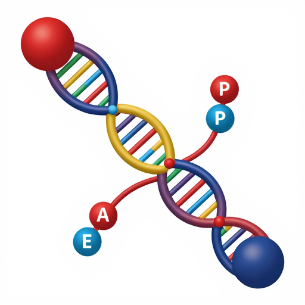

The mRNA message docks with a cellular machine called a ribosome. The ribosome is the protein factory.
It reads the mRNA code in three-letter "words" called codons. Another type of RNA, transfer RNA (tRNA), brings the correct amino acid for each codon.
The ribosome links these amino acids together, one by one, forming a long chain that folds into a functional protein. This amazing process is called Translation.
